Obdobie dát: 23.10.2026 08:57 – 27.10.2026 14:52
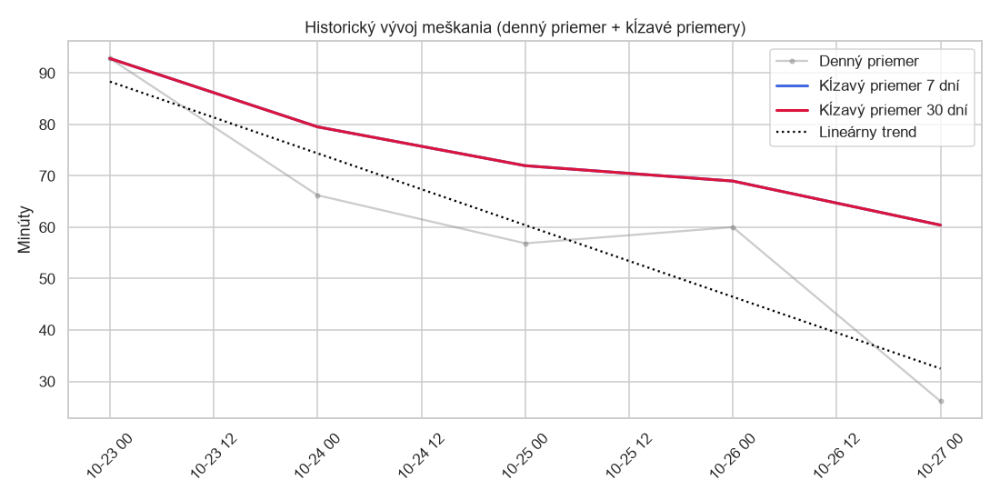
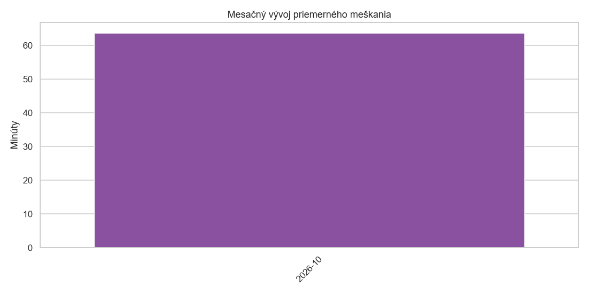
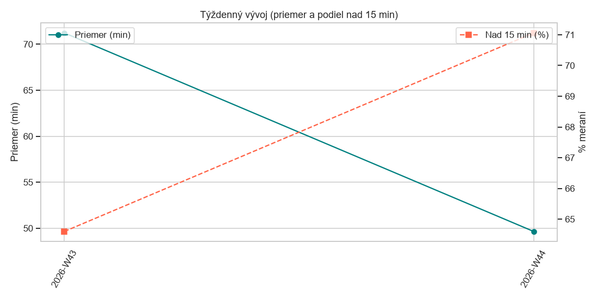
| Zaznamov | Priemer | Median | P90 | Max | Std | Meskaju_pct | Nad5_pct | Nad15_pct | Nad60_pct | |
|---|---|---|---|---|---|---|---|---|---|---|
| Mesiac | ||||||||||
| 2026-10 | 12669 | 63.62 | 20.00 | 76.00 | 2176 | 191.80 | 96.09 | 85.28 | 66.89 | 12.28 |
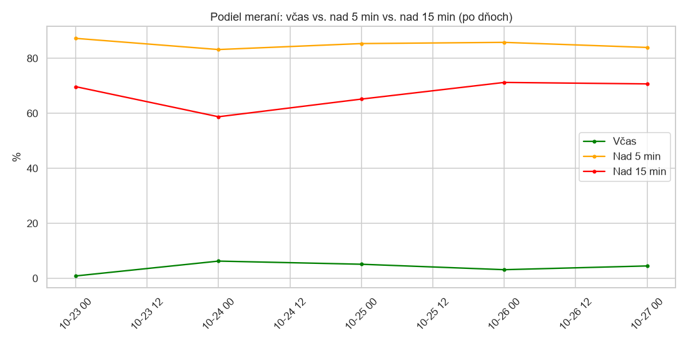
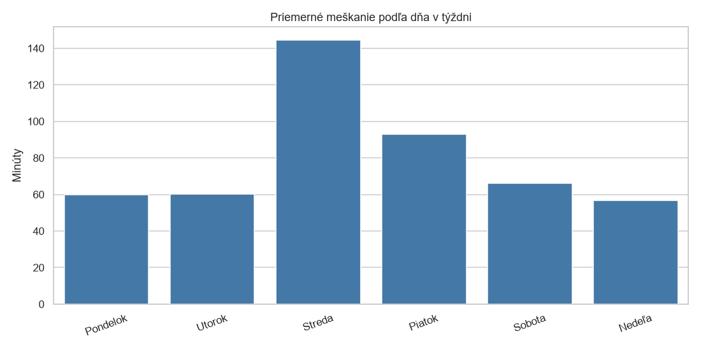
| Zaznamov | Priemer | Median | P90 | Max | Std | Meskaju_pct | Nad5_pct | Nad15_pct | Nad60_pct | |
|---|---|---|---|---|---|---|---|---|---|---|
| Den | ||||||||||
| Pondelok | 3131 | 60.02 | 22.00 | 122.00 | 1372 | 170.06 | 96.87 | 85.79 | 71.22 | 13.41 |
| Utorok | 1359 | 26.15 | 20.00 | 49.00 | 760 | 42.01 | 95.51 | 84.11 | 70.64 | 4.27 |
| Piatok | 2603 | 92.85 | 20.00 | 125.80 | 2172 | 271.77 | 99.15 | 87.25 | 69.69 | 13.95 |
| Sobota | 2545 | 66.23 | 19.00 | 83.00 | 2176 | 195.90 | 93.75 | 83.18 | 58.74 | 13.99 |
| Nedeľa | 3031 | 56.87 | 20.00 | 78.00 | 1491 | 161.43 | 94.89 | 85.35 | 65.16 | 11.84 |
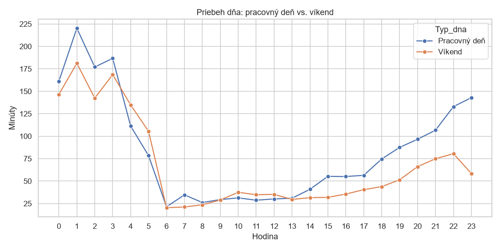
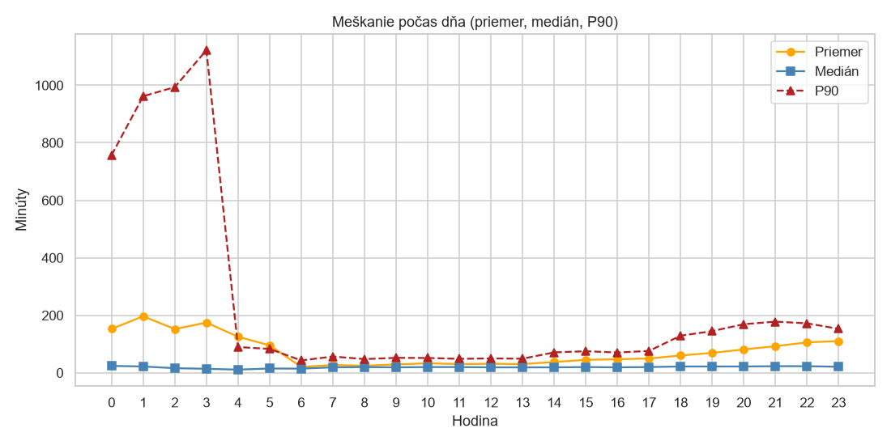
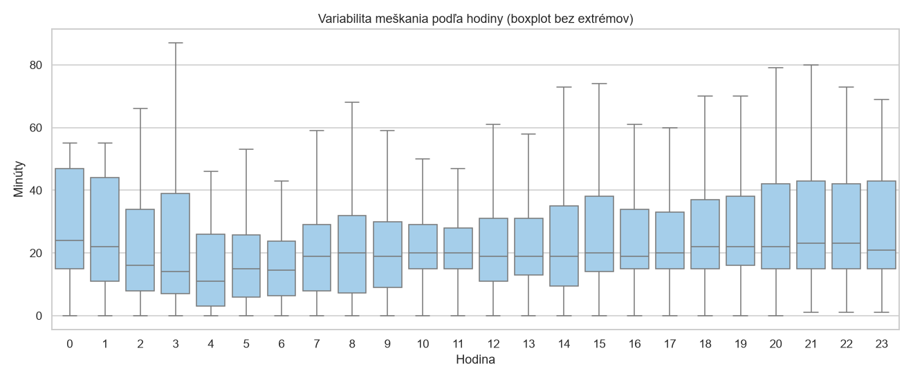
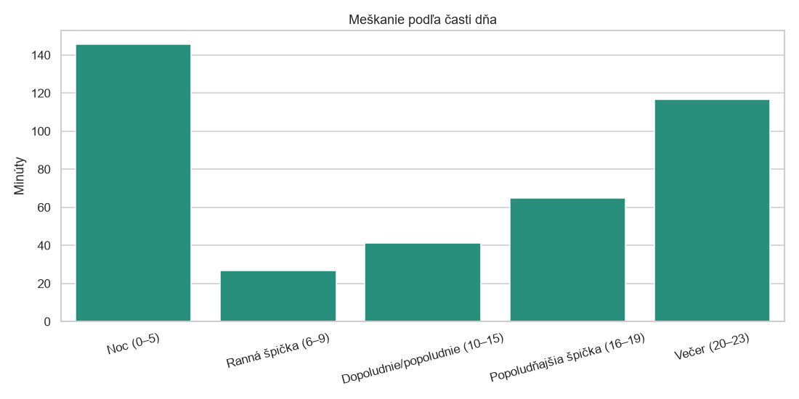
| Zaznamov | Priemer | Median | P90 | Max | Std | Meskaju_pct | Nad5_pct | Nad15_pct | Nad60_pct | |
|---|---|---|---|---|---|---|---|---|---|---|
| Cast_dna | ||||||||||
| Noc (0–5) | 1532 | 149.21 | 17.00 | 767.90 | 2176 | 359.01 | 91.64 | 84.92 | 54.77 | 17.69 |
| Ranná špička (6–9) | 1492 | 26.70 | 19.00 | 50.00 | 485 | 37.62 | 94.30 | 80.83 | 59.58 | 8.18 |
| Dopoludnie/popoludnie (10–15) | 4737 | 34.19 | 20.00 | 54.00 | 1211 | 80.90 | 95.71 | 83.89 | 68.02 | 8.51 |
| Popoludňajšia špička (16–19) | 2476 | 56.87 | 21.00 | 122.00 | 1691 | 158.56 | 96.85 | 85.30 | 71.57 | 13.53 |
| Večer (20–23) | 2432 | 96.56 | 22.00 | 172.00 | 2172 | 251.07 | 99.96 | 90.91 | 72.04 | 17.48 |
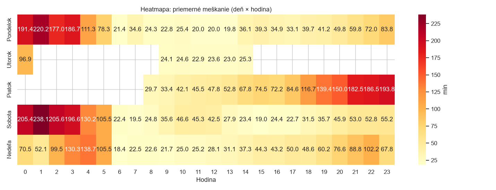
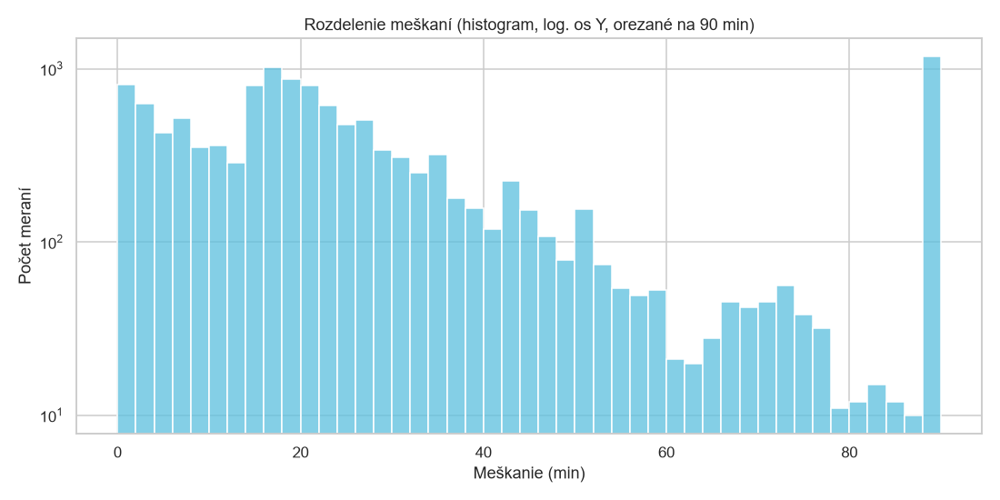
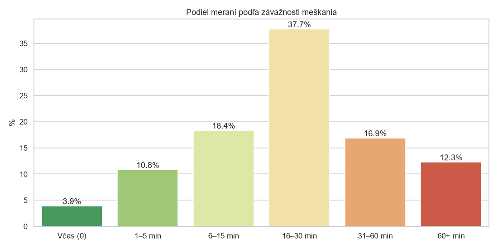
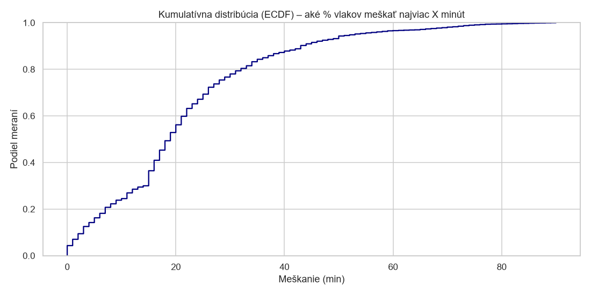
| Percentil | Minuty |
|---|---|
| P25 | 12.00 |
| P50 | 20.00 |
| P75 | 34.00 |
| P90 | 76.00 |
| P95 | 179.00 |
| P99 | 1,213.60 |
| P99.9 | 1,929.32 |
| Zaznamov | Podiel_% | |
|---|---|---|
| Kategoria | ||
| Včas (0) | 495 | 3.91 |
| 1–5 min | 1370 | 10.81 |
| 6–15 min | 2330 | 18.39 |
| 16–30 min | 4777 | 37.71 |
| 31–60 min | 2141 | 16.90 |
| 60+ min | 1556 | 12.28 |
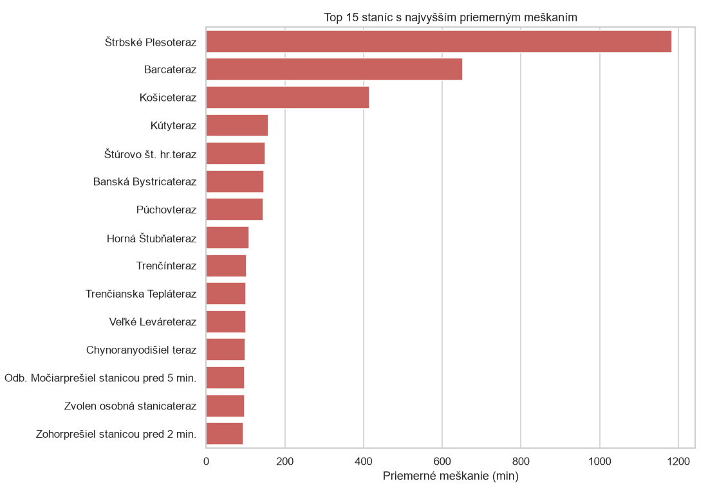
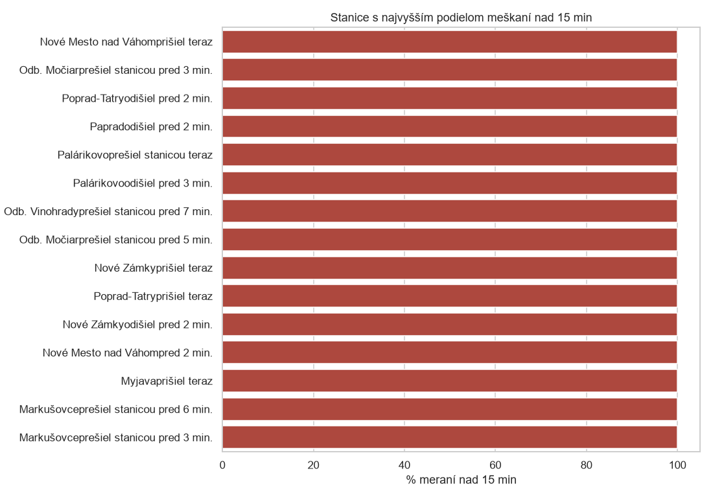
| Zaznamov | Priemer | Median | P90 | Max | Std | Meskaju_pct | Nad5_pct | Nad15_pct | Nad60_pct | |
|---|---|---|---|---|---|---|---|---|---|---|
| Stanica_Poloha | ||||||||||
| Štrbské Plesoteraz | 93 | 1,184.03 | 1,211.00 | 1,955.00 | 2172 | 577.94 | 100.00 | 100.00 | 100.00 | 100.00 |
| Barcateraz | 400 | 652.96 | 624.00 | 1,253.30 | 1485 | 432.88 | 100.00 | 100.00 | 99.75 | 89.00 |
| Košiceteraz | 152 | 414.34 | 282.00 | 1,092.90 | 1371 | 409.84 | 100.00 | 100.00 | 96.05 | 64.47 |
| Kútyteraz | 65 | 158.37 | 33.00 | 489.60 | 618 | 189.91 | 100.00 | 100.00 | 58.46 | 43.08 |
| Štúrovo št. hr.teraz | 5 | 150.20 | 124.00 | 291.20 | 366 | 134.11 | 100.00 | 100.00 | 100.00 | 60.00 |
| Banská Bystricateraz | 12 | 147.25 | 147.00 | 253.00 | 265 | 80.25 | 100.00 | 100.00 | 100.00 | 75.00 |
| Púchovteraz | 105 | 146.99 | 120.00 | 388.00 | 533 | 146.41 | 100.00 | 100.00 | 95.24 | 50.48 |
| Horná Štubňateraz | 18 | 109.83 | 137.00 | 173.20 | 244 | 70.53 | 100.00 | 100.00 | 100.00 | 61.11 |
| Trenčínteraz | 31 | 102.23 | 73.00 | 177.00 | 268 | 73.13 | 100.00 | 100.00 | 100.00 | 54.84 |
| Trenčianska Tepláteraz | 12 | 101.33 | 93.00 | 170.00 | 241 | 72.35 | 100.00 | 100.00 | 100.00 | 50.00 |
| Veľké Leváreteraz | 15 | 101.20 | 53.00 | 172.60 | 385 | 99.88 | 100.00 | 100.00 | 100.00 | 46.67 |
| Chynoranyodišiel teraz | 5 | 99.60 | 46.00 | 201.60 | 242 | 91.33 | 100.00 | 100.00 | 100.00 | 40.00 |
| Odb. Močiarprešiel stanicou pred 5 min. | 5 | 97.80 | 29.00 | 249.00 | 391 | 164.12 | 100.00 | 100.00 | 100.00 | 20.00 |
| Zvolen osobná stanicateraz | 23 | 97.70 | 123.00 | 168.20 | 241 | 67.79 | 100.00 | 100.00 | 95.65 | 52.17 |
| Zohorprešiel stanicou pred 2 min. | 5 | 94.00 | 56.00 | 198.80 | 240 | 94.91 | 100.00 | 100.00 | 80.00 | 40.00 |
| Skalitéteraz | 9 | 92.89 | 120.00 | 153.00 | 161 | 58.09 | 100.00 | 100.00 | 100.00 | 55.56 |
| Senecprešiel stanicou pred 3 min. | 6 | 89.50 | 34.00 | 218.00 | 393 | 149.11 | 100.00 | 100.00 | 100.00 | 16.67 |
| Bratislava-Nové Mestoteraz | 13 | 87.15 | 124.00 | 136.00 | 145 | 55.20 | 100.00 | 100.00 | 92.31 | 53.85 |
| Prešovteraz | 13 | 86.92 | 52.00 | 162.80 | 176 | 61.89 | 100.00 | 100.00 | 100.00 | 46.15 |
| Štúrovoprišiel teraz | 6 | 86.00 | 23.00 | 218.00 | 398 | 153.08 | 100.00 | 100.00 | 100.00 | 16.67 |
| Ludaniceteraz | 17 | 85.24 | 55.00 | 162.00 | 179 | 56.76 | 100.00 | 100.00 | 100.00 | 41.18 |
| Pribetaprešiel stanicou teraz | 6 | 84.33 | 41.00 | 183.00 | 245 | 86.24 | 100.00 | 100.00 | 100.00 | 33.33 |
| Veľké Bieliceteraz | 5 | 78.80 | 59.00 | 136.00 | 140 | 53.54 | 100.00 | 100.00 | 100.00 | 40.00 |
| Bratislava hlavná stanicaodišiel pred 2 min. | 7 | 77.86 | 20.00 | 184.40 | 392 | 138.90 | 100.00 | 100.00 | 100.00 | 14.29 |
| Sládkovičovoprešiel stanicou pred 2 min. | 5 | 77.00 | 48.00 | 154.80 | 172 | 69.88 | 100.00 | 100.00 | 100.00 | 40.00 |
| Zaznamov | Priemer | Median | P90 | Max | Std | Meskaju_pct | Nad5_pct | Nad15_pct | Nad60_pct | |
|---|---|---|---|---|---|---|---|---|---|---|
| Stanica_Poloha | ||||||||||
| 0 | 242 | 0.00 | 0.00 | 0.00 | 0 | 0.00 | 0.00 | 0.00 | 0.00 | 0.00 |
| Trnava nákladná stanica | 11 | 3.00 | 0.00 | 12.00 | 13 | 5.02 | 45.45 | 27.27 | 0.00 | 0.00 |
| Veľké Kostoľany | 11 | 4.64 | 0.00 | 14.00 | 28 | 8.86 | 45.45 | 27.27 | 9.09 | 0.00 |
| Turany | 7 | 4.71 | 2.00 | 11.00 | 14 | 5.22 | 85.71 | 42.86 | 0.00 | 0.00 |
| Výh. Potvorice | 5 | 5.00 | 2.00 | 11.20 | 14 | 5.66 | 80.00 | 40.00 | 0.00 | 0.00 |
| Ladce | 7 | 5.29 | 4.00 | 12.60 | 18 | 6.47 | 71.43 | 28.57 | 14.29 | 0.00 |
| Výh. Ružín | 14 | 5.50 | 2.50 | 15.70 | 19 | 6.37 | 85.71 | 28.57 | 14.29 | 0.00 |
| Žilina | 14 | 5.50 | 0.00 | 18.10 | 26 | 8.72 | 42.86 | 28.57 | 21.43 | 0.00 |
| 1 | 264 | 5.84 | 1.00 | 14.00 | 100 | 11.62 | 51.52 | 33.71 | 8.71 | 0.76 |
| Výh. Nivy | 9 | 6.00 | 3.00 | 16.20 | 17 | 6.52 | 100.00 | 33.33 | 22.22 | 0.00 |
| 3 | 236 | 6.33 | 2.00 | 23.00 | 60 | 11.53 | 100.00 | 16.53 | 12.29 | 0.00 |
| 2 | 242 | 6.71 | 1.00 | 25.00 | 66 | 10.43 | 100.00 | 26.03 | 19.42 | 0.41 |
| Spišská Nová Ves | 24 | 6.92 | 6.00 | 15.40 | 19 | 5.82 | 83.33 | 58.33 | 12.50 | 0.00 |
| 4 | 196 | 6.92 | 3.00 | 16.00 | 80 | 12.41 | 100.00 | 13.78 | 10.71 | 0.51 |
| 5 | 150 | 7.19 | 4.00 | 17.00 | 55 | 10.27 | 100.00 | 18.00 | 12.00 | 0.00 |
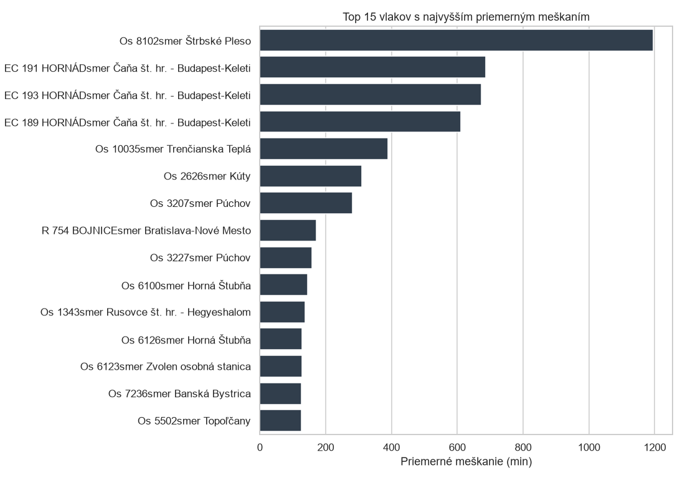
| Zaznamov | Priemer | Median | P90 | Max | Std | Meskaju_pct | Nad5_pct | Nad15_pct | Nad60_pct | |
|---|---|---|---|---|---|---|---|---|---|---|
| Vlak | ||||||||||
| Os 8102smer Štrbské Pleso | 94 | 1,194.59 | 1,216.00 | 1,964.70 | 2176 | 583.86 | 100.00 | 100.00 | 100.00 | 100.00 |
| EC 191 HORNÁDsmer Čaňa št. hr. - Budapest-Keleti | 133 | 685.94 | 648.00 | 1,254.40 | 1377 | 423.52 | 100.00 | 100.00 | 100.00 | 91.73 |
| EC 193 HORNÁDsmer Čaňa št. hr. - Budapest-Keleti | 235 | 672.39 | 624.00 | 1,322.40 | 1491 | 427.20 | 100.00 | 100.00 | 99.57 | 92.77 |
| EC 189 HORNÁDsmer Čaňa št. hr. - Budapest-Keleti | 150 | 609.87 | 605.50 | 1,247.10 | 1372 | 437.98 | 100.00 | 100.00 | 99.33 | 84.67 |
| Os 10035smer Trenčianska Teplá | 23 | 389.83 | 394.00 | 402.00 | 405 | 11.75 | 100.00 | 100.00 | 100.00 | 100.00 |
| Os 2626smer Kúty | 29 | 310.48 | 290.00 | 528.00 | 618 | 181.50 | 100.00 | 100.00 | 100.00 | 86.21 |
| Os 3207smer Púchov | 27 | 282.30 | 275.00 | 505.40 | 533 | 166.23 | 100.00 | 100.00 | 100.00 | 85.19 |
| R 754 BOJNICEsmer Bratislava-Nové Mesto | 19 | 170.89 | 171.00 | 177.20 | 178 | 5.52 | 100.00 | 100.00 | 100.00 | 100.00 |
| Os 3227smer Púchov | 38 | 158.66 | 140.00 | 370.30 | 409 | 121.38 | 100.00 | 100.00 | 100.00 | 65.79 |
| Os 6100smer Horná Štubňa | 8 | 144.25 | 155.00 | 244.00 | 244 | 85.28 | 100.00 | 100.00 | 100.00 | 75.00 |
| Os 1343smer Rusovce št. hr. - Hegyeshalom | 10 | 137.80 | 137.00 | 141.00 | 141 | 2.25 | 100.00 | 100.00 | 100.00 | 100.00 |
| Os 6126smer Horná Štubňa | 12 | 128.17 | 140.00 | 237.20 | 244 | 77.18 | 100.00 | 100.00 | 100.00 | 66.67 |
| Os 6123smer Zvolen osobná stanica | 12 | 128.08 | 140.00 | 238.10 | 245 | 77.37 | 100.00 | 100.00 | 100.00 | 66.67 |
| Os 7236smer Banská Bystrica | 19 | 126.63 | 131.00 | 266.60 | 273 | 99.21 | 100.00 | 100.00 | 100.00 | 57.89 |
| Os 5502smer Topoľčany | 6 | 125.33 | 140.50 | 141.00 | 141 | 32.78 | 100.00 | 100.00 | 100.00 | 83.33 |
| Os 8336smer Poprad-Tatry | 9 | 125.22 | 153.00 | 156.20 | 157 | 57.70 | 100.00 | 100.00 | 100.00 | 77.78 |
| R 751 BOJNICEsmer Prievidza | 26 | 121.77 | 132.00 | 242.00 | 248 | 97.44 | 100.00 | 100.00 | 100.00 | 53.85 |
| Os 5417smer Trenčianska Teplá | 12 | 118.42 | 133.50 | 234.00 | 246 | 80.54 | 100.00 | 100.00 | 100.00 | 58.33 |
| Os 6107smer Zvolen osobná stanica | 12 | 117.67 | 133.00 | 233.80 | 244 | 80.25 | 100.00 | 100.00 | 100.00 | 58.33 |
| R 753 BOJNICEsmer Prievidza | 14 | 112.14 | 144.00 | 145.00 | 146 | 49.31 | 100.00 | 100.00 | 100.00 | 71.43 |
| Zaznamov | Priemer | Median | P90 | Max | Std | Meskaju_pct | Nad5_pct | Nad15_pct | Nad60_pct | |
|---|---|---|---|---|---|---|---|---|---|---|
| Vlak | ||||||||||
| mešká 30-59 minút | 548 | 2.78 | 2.00 | 5.00 | 25 | 3.14 | 79.74 | 8.76 | 0.91 | 0.00 |
| mešká 60 a viac minút | 548 | 4.95 | 1.00 | 14.00 | 100 | 11.64 | 63.50 | 14.05 | 9.67 | 0.36 |
| mešká 15-29 minút | 548 | 7.46 | 6.00 | 13.30 | 66 | 6.55 | 93.98 | 57.12 | 7.85 | 0.18 |
| Ex 610 TATRAN | 559 | 9.88 | 6.00 | 28.20 | 35 | 9.94 | 93.74 | 62.43 | 16.64 | 0.00 |
| Ex 618 TATRAN | 559 | 11.97 | 7.00 | 34.00 | 79 | 11.41 | 95.17 | 72.81 | 23.08 | 0.18 |
| Ex 620 TATRAN | 559 | 10.84 | 8.00 | 26.00 | 26 | 8.22 | 95.53 | 76.03 | 22.36 | 0.00 |
| Ex 614 TATRAN | 559 | 14.80 | 15.00 | 22.00 | 39 | 6.94 | 97.32 | 88.19 | 35.06 | 0.00 |
| Ex 621 TATRAN | 559 | 25.50 | 21.00 | 50.00 | 50 | 15.90 | 95.89 | 88.37 | 66.91 | 0.00 |
| mešká 5-14 minút | 548 | 19.11 | 19.00 | 29.00 | 57 | 7.77 | 97.81 | 96.72 | 69.71 | 0.00 |
| mešká do 5 minút | 548 | 63.54 | 68.00 | 81.00 | 93 | 18.21 | 97.45 | 97.45 | 95.62 | 69.71 |
| Os 4927smer Štúrovo | 5 | 15.00 | 15.00 | 15.00 | 15 | 0.00 | 100.00 | 100.00 | 0.00 | 0.00 |
| Os 9213smer Bardejov | 5 | 15.00 | 15.00 | 15.00 | 15 | 0.00 | 100.00 | 100.00 | 0.00 | 0.00 |
| REx 1925smer Humenné | 6 | 15.17 | 15.00 | 15.50 | 16 | 0.41 | 100.00 | 100.00 | 16.67 | 0.00 |
| Os 2015smer Bratislava hlavná stanica | 5 | 15.20 | 15.00 | 15.60 | 16 | 0.45 | 100.00 | 100.00 | 20.00 | 0.00 |
| REx 1787smer Margecany | 5 | 15.20 | 15.00 | 15.60 | 16 | 0.45 | 100.00 | 100.00 | 20.00 | 0.00 |
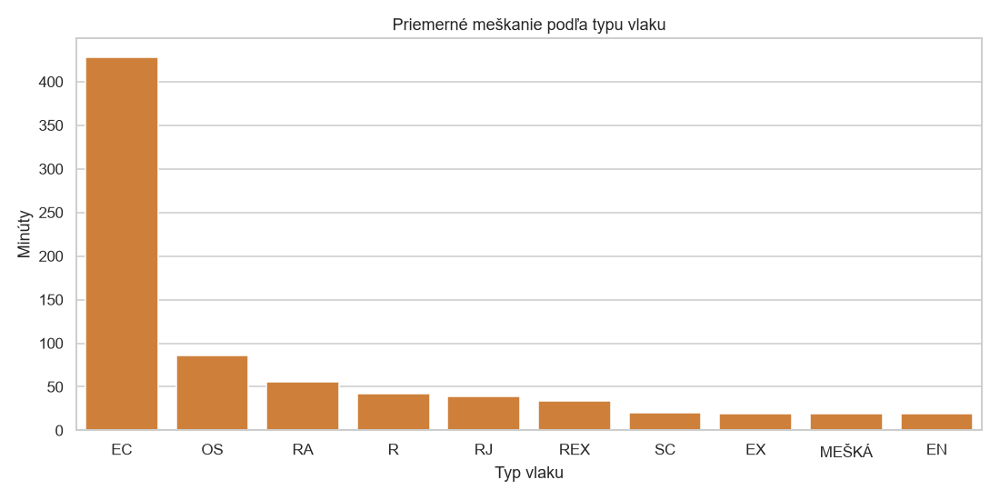
| Zaznamov | Priemer | Median | P90 | Max | Std | Meskaju_pct | Nad5_pct | Nad15_pct | Nad60_pct | |
|---|---|---|---|---|---|---|---|---|---|---|
| Typ_vlaku | ||||||||||
| EC | 818 | 428.98 | 245.00 | 1,208.20 | 1491 | 455.60 | 100.00 | 100.00 | 97.80 | 59.05 |
| OS | 2571 | 86.41 | 21.00 | 141.00 | 2176 | 252.80 | 100.00 | 100.00 | 87.98 | 14.43 |
| RA | 365 | 56.12 | 31.00 | 151.00 | 246 | 59.16 | 100.00 | 100.00 | 95.07 | 21.10 |
| R | 1069 | 41.96 | 27.00 | 125.20 | 248 | 41.32 | 100.00 | 100.00 | 94.86 | 11.69 |
| RJ | 375 | 39.04 | 29.00 | 57.00 | 240 | 35.83 | 100.00 | 100.00 | 95.20 | 9.60 |
| REX | 449 | 33.35 | 24.00 | 50.00 | 177 | 30.06 | 100.00 | 100.00 | 91.09 | 7.13 |
| SC | 80 | 20.23 | 20.00 | 26.00 | 31 | 3.71 | 100.00 | 100.00 | 93.75 | 0.00 |
| EX | 4125 | 19.71 | 16.00 | 39.60 | 139 | 17.15 | 96.97 | 84.80 | 51.88 | 1.14 |
| MEŠKÁ | 2740 | 19.57 | 8.00 | 68.00 | 100 | 25.12 | 86.50 | 54.82 | 36.75 | 14.05 |
| EN | 77 | 19.56 | 17.00 | 27.00 | 48 | 6.91 | 100.00 | 100.00 | 81.82 | 0.00 |
| Timestamp | Vlak | Stanica_Poloha | Meskanie_Text | Meskanie_Minuty |
|---|---|---|---|---|
| 2026-10-24 00:08 | Os 8102smer Štrbské Pleso | Štrbské Plesopred 6 min. | + 1096 minút= 18 hod, 16 min. | 2176 |
| 2026-10-23 23:57 | Os 8102smer Štrbské Pleso | Štrbské Plesoteraz | + 1092 minút= 18 hod, 12 min. | 2172 |
| 2026-10-23 23:47 | Os 8102smer Štrbské Pleso | Štrbské Plesoteraz | + 1081 minút= 18 hod, 1 min. | 2161 |
| 2026-10-23 23:36 | Os 8102smer Štrbské Pleso | Štrbské Plesoteraz | + 1071 minút= 17 hod, 51 min. | 2091 |
| 2026-10-23 23:26 | Os 8102smer Štrbské Pleso | Štrbské Plesoteraz | + 1061 minút= 17 hod, 41 min. | 2081 |
| 2026-10-23 23:15 | Os 8102smer Štrbské Pleso | Štrbské Plesoteraz | + 1050 minút= 17 hod, 30 min. | 2070 |
| 2026-10-23 23:05 | Os 8102smer Štrbské Pleso | Štrbské Plesoteraz | + 1039 minút= 17 hod, 19 min. | 2059 |
| 2026-10-23 22:54 | Os 8102smer Štrbské Pleso | Štrbské Plesoteraz | + 1029 minút= 17 hod, 9 min. | 2049 |
| 2026-10-23 22:44 | Os 8102smer Štrbské Pleso | Štrbské Plesoteraz | + 1018 minút= 16 hod, 58 min. | 1978 |
| 2026-10-23 22:33 | Os 8102smer Štrbské Pleso | Štrbské Plesoteraz | + 1008 minút= 16 hod, 48 min. | 1968 |
| 2026-10-23 22:23 | Os 8102smer Štrbské Pleso | Štrbské Plesoteraz | + 997 minút= 16 hod, 37 min. | 1957 |
| 2026-10-23 22:12 | Os 8102smer Štrbské Pleso | Štrbské Plesoteraz | + 987 minút= 16 hod, 27 min. | 1947 |
| 2026-10-23 22:02 | Os 8102smer Štrbské Pleso | Štrbské Plesoteraz | + 976 minút= 16 hod, 16 min. | 1936 |
| 2026-10-23 21:51 | Os 8102smer Štrbské Pleso | Štrbské Plesoteraz | + 966 minút= 16 hod, 6 min. | 1926 |
| 2026-10-23 21:41 | Os 8102smer Štrbské Pleso | Štrbské Plesoteraz | + 956 minút= 15 hod, 56 min. | 1856 |
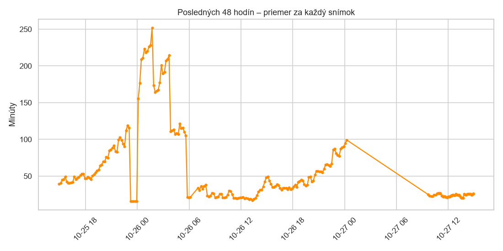
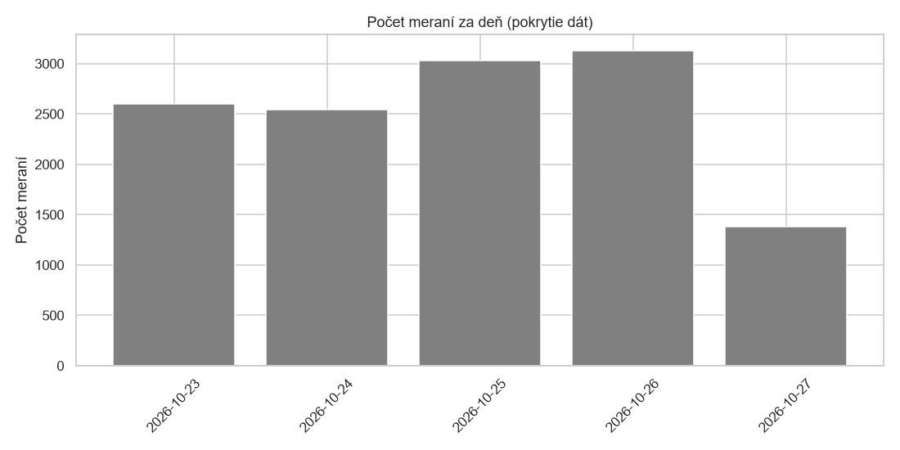
statistiky/ (CSV)